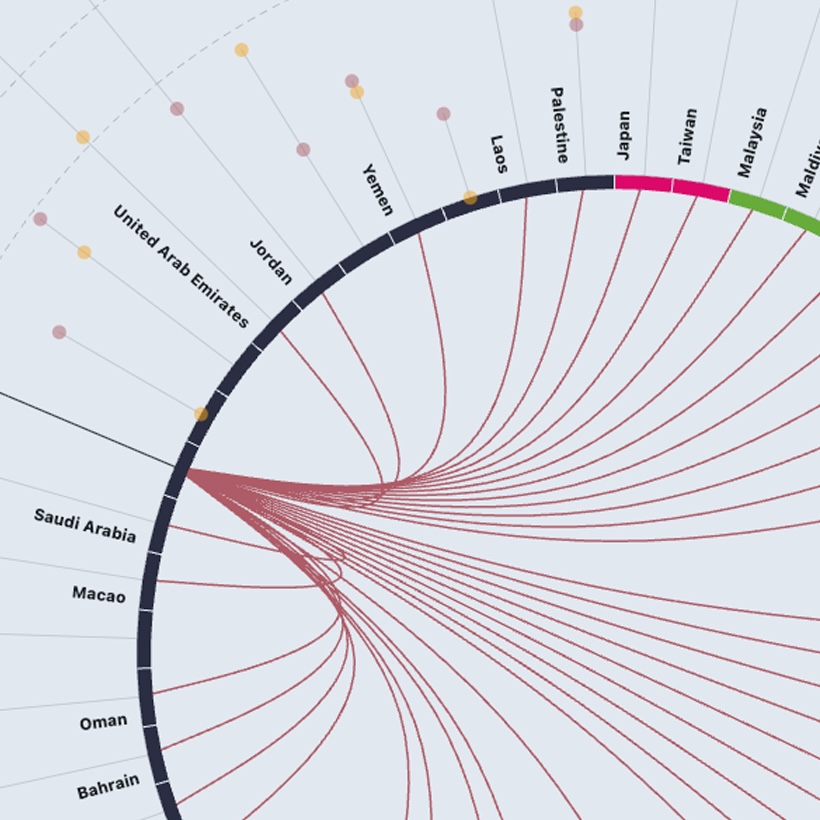
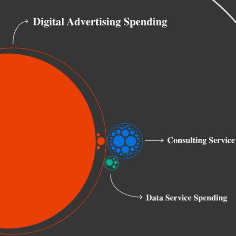
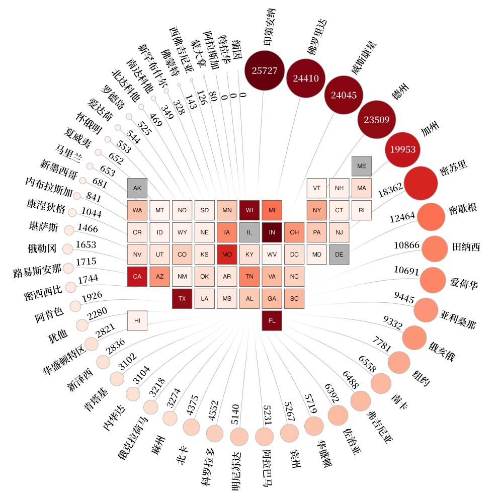
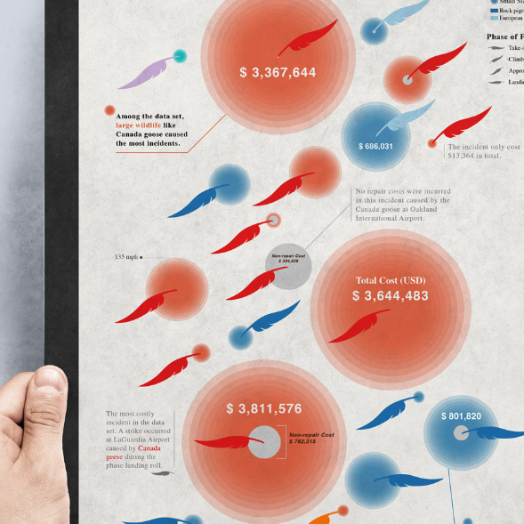

Application for Junior Graphics Storyteller / Journalist
Hello, Kontinentalist
I am Sihang Sun
I am excited to apply for the Junior Graphics Storyteller / Journalist position at Kontinentalist. As a data visualization designer and former journalist, I bring a rare combination of newsroom experience, analytical thinking, visualization design, and front-end development skills to create data-driven stories that are clear, engaging, and accessible to broad audiences.
In my current role as a Data Visualization Designer/BI Analyst at the Massachusetts Department of Transportation, I turn complex transit data into accessible public-facing products through data visualization, web design, and storytelling. Most recently, I led the redesign of MassDOT’s Annual Performance Report, transforming a traditional scorecard into an interactive website with scrollytelling and a data explorer.
Driven by a desire to help readers understand the world around them, I launched Chicago by the Numbers, a recurring data column for Chicago’s Chinese-speaking audience. For each issue, I manage the full project lifecycle, collaborating with editors to define the narrative angle and translating raw data into compelling storytelling charts.
What draws me most to Kontinentalist is its mission to grow Asia’s voice in global conversations through data storytelling. As a first-generation Chinese immigrant now based in Boston, I have experienced firsthand what it means to navigate different cultures and recognize the importance of making Asian stories more visible and accessible to broader audiences. That perspective has shaped both my professional work and personal projects—from visualizing Chinese leaders' foreign visits around the globe to launching a recurring data journalism column for Chicago’s Chinese-speaking community. I am excited by the opportunity to contribute to a team where reporting, design, and code come together to tell thoughtful, data-driven stories about Asia, while learning from a studio whose work has become a leading voice in the region’s data storytelling community.
Thank you for your consideration. I would welcome the opportunity to discuss how my background and experience could contribute to Kontinentalist’s editorial and visual storytelling work.
Ready to see my background?
Download ResumePROJECT 1
Who Opens the Door for Whom?
I played multiple roles in this project from start to finish. I sourced and analyzed public datasets using BI tools to identify patterns, generate insights, and evaluate potential story angles. As someone passionate about data storytelling, my goal was not simply to visualize data, but to reveal the stories behind it.
After exploring the full dataset, I found the Asian subset particularly compelling. Asia has the lowest rate of mutual visa-free travel in the world while encompassing extraordinary diversity in many aspects. The subset revealed numerous patterns that felt newsworthy, leading me to focus the project on Asian countries.
One aspect I am especially proud of is the custom visualization developed for the story. Beyond being visually engaging, the design was intentionally shaped by the subject matter itself. The primary visual form is a circle. The data is about countries, and countries sit on our planet, which is a globe (a circle). It’s also inspired by the nature of the phenomenon I’m trying to visualize—the relationships. When I think of relationships, I often think of entities standing in a circle, with complex exchanges happening around them. This concept is both thematic and functional, helping readers understand complex mobility relationships and phenomenon.
I believe this project demonstrates the type of interactive, data-driven storytelling that can contribute to Kontinentalist’s journalism. The project was also my first experience developing with Svelte, a modern JavaScript framework, which reflects both my technical skills and my enthusiasm for learning new tools and approaches.
The project was recognized by the 2025 Pudding Cup.


PROJECT 2
The Industry Behind Your Vote: A Visual Essay
This visual essay uses spending data from Donald Trump’s 2020 presidential campaign to trace investments in data-driven influence services and reveal the companies behind the influence industry.
I led this project end-to-end, from data analysis and story development to visual design and interactive data visualization development. Following its publication by Tactical Tech, I collaborated with the editor to prepare accompanying story summaries and methodology documentation.
What I am most proud of in this project is the coherence and clarity achieved through the consistent use of simple visual forms. Throughout the story, a circle serves multiple purposes—as a voter badge, a representation of money, a circle-packing chart element, and a data point. This visual consistency helps reduce readers’ cognitive load, allowing them to focus on the story rather than deciphering new visual encodings. At the same time, the changing states of the circle create a more engaging and dynamic reading experience.
I am also pleased with the effective use of scrollytelling and the martini glass narrative structure. The author-driven section provides readers with the necessary context and background before guiding them into a reader-driven data exploration experience at the end. If I were to revisit the project, I would spend more time condensing the content and shortening parts of the narrative to create a tighter reading experience.
I believe this project demonstrates the kind of creative web storytelling and visual communication skills that align well with Kontinentalist’s approach to explanatory and investigative journalism.
PROJECT 3
Chicago by the Numbers
The Google Drive folder contains a selection of infographics I created for “Chicago by the Numbers”, a recurring data journalism column serving Chicago’s Chinese-speaking community.
Driven by a desire to help readers better understand the world around them, I launched the column last year with the goal of telling local stories through public data using accessible language and engaging visual storytelling. For each issue, I explore datasets from sources such as the Chicago Data Portal and the U.S. Census Bureau, identify meaningful patterns and insights, and develop potential story ideas. I then collaborate with editors to refine the story angle and translate the findings into clear and compelling visual narratives.
Produced for a local community news outlet, many of the topics focus on issues that are directly related to residents' daily lives. Past stories have explored residential property tax trends, the City of Chicago’s payroll spending, and migration patterns among Illinois residents.
I am particularly proud of the reusable design system I developed for the column. By standardizing chart styles, typography, color palettes, and layout patterns, I created a recognizable visual identity that remains consistent across stories. The system not only improves the quality and cohesion of the work, but also increases efficiency in a fast-paced newsroom environment.
Systematic design and efficient workflows are principles I value highly in my work. I believe this experience would allow me to contribute effectively to Kontinentalist’s mission and future storytelling projects.


PROJECT 4
Bird Strikes
This infographic visualizes a subset of bird strikes data using a set of glyphs. The glyphs were designed to visualize 6 different dimensions of the data in one visual composite and facilitate user tasks that lead to meaningful insights.
To firstly explore the relationships in the data set, a scatter plot was created using ggplot2 package in R. The 4 continuous numerical variables can be grouped into two groups (cost and speed) and two representative variables from each group are "Speed IAS in knots" and "Cost Total $".
The scatter plot shows no correlation between aircraft's speed and incident's total cost in this data set. But some interesting insight worth to be revealed in the infographic.
Firstly, there are three most costly incidents on the top were all caused by large birds.
Second, Medium bird strikes usually to occur on high-speed aircraft.
Third, the costs of small bird strikes can also be high, despite the fact that large birds caused many costly strikes.
Later, annotations in the infographic were designed to help viewers find these insights.
The main part of the glyph is a bird feather like element to make it visually appealing and fit the theme of the data set.
This element serves as a human recognizable object. According to some researches, human recognizable objects allow a visualization to be retrieved from memory more effectively and help convey the message of the visualization.
The second part of the glyph is a circle. As a commonly used visualization mark, circle is readily perceived visual element and its visual attributes are later used to encode many data variables.
Moreover, the circle element also mimics the damage used to represent damage cost related data variables, as bird strikes produce bullseye type damages.
To accurately encode the data, the circle part of the glyph came from a bubble chart of the data set made in RAWGraphs. Adobe Illustrator was used to design other visual elements, annotations, and the layout.